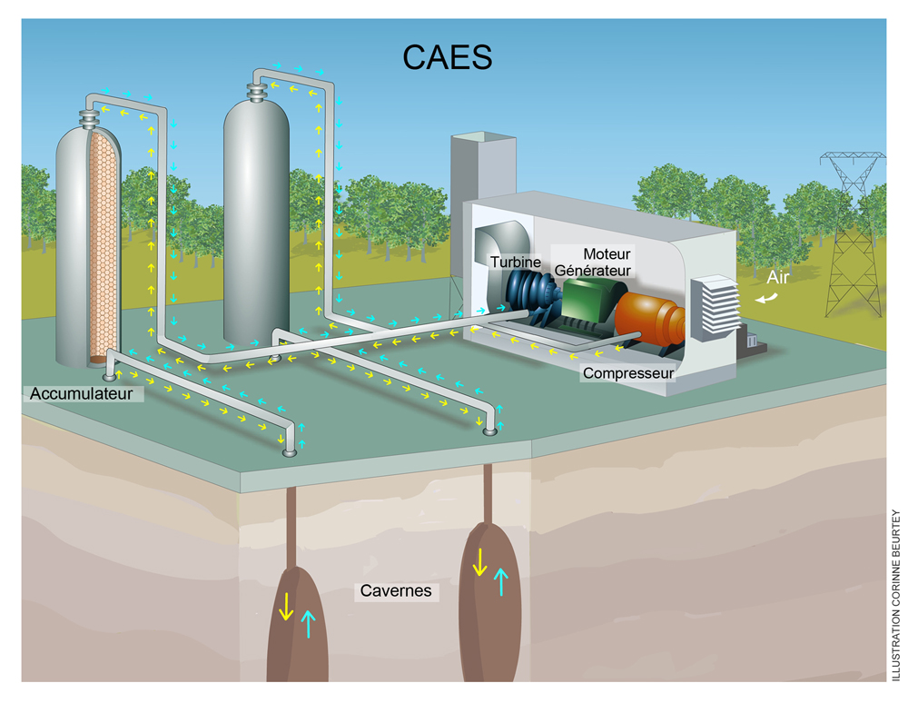
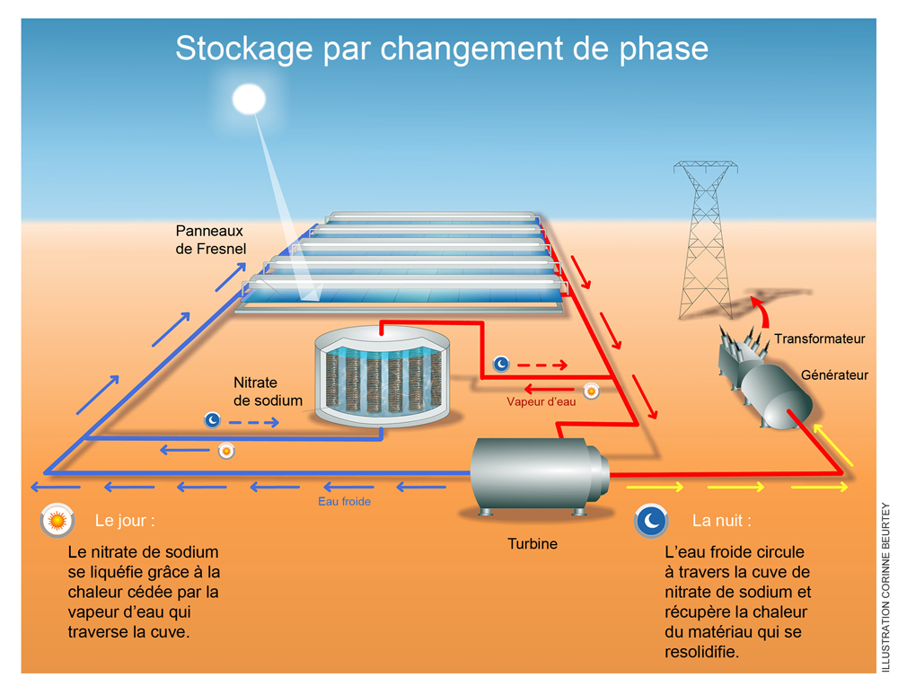
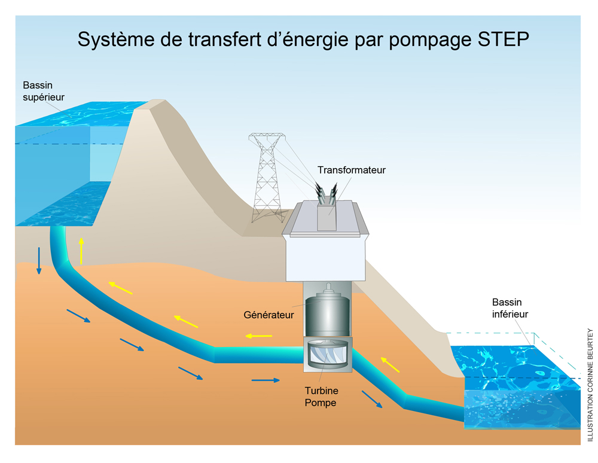
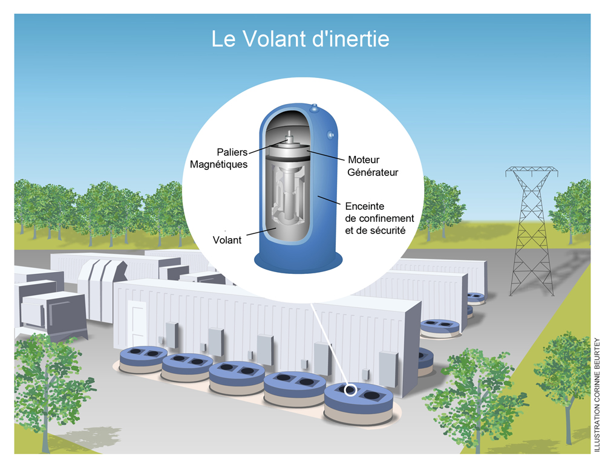

LIENS
Principes
Applications
- https://jancovici.com/transition-energetique/renouvelables/est-ce-facile-de-stocker-lenergie/
- http://www.smartgrids-cre.fr/index.php?p=stockage-technologies
- https://www.enea-consulting.com/wp-content/uploads/2015/05/ENEA-Consulting-Le-Stockage-dEnergie1.pdf
Vulgarisation
- https://www.connaissancedesenergies.org/fiche-pedagogique/stockage-de-l-energie
- https://s3-eu-west-1.amazonaws.com/academie-technologies-staging/academie-technologies-siteweb/fileadmin/templates/PDF/10_questions/10QuestionsJDhers.pdf
Introduction (Niveau école/collège)
- http://www.lycee-ferry-versailles.fr/si-new/2_4_stockage/cours_stockage_energie_v5.pdf
- http://cm1cm2.ceyreste.free.fr/formes.html
Tutoriels
Les tutos de Low tech lab (en français) : http://lowtechlab.org/wiki/Explore?page=8
Dans la presse
- Les échos ("Les nouvelles pistes") https://www.lesechos.fr/09/02/2016/LesEchos/22125-043-ECH_stockage-d-electricite---les-nouvelles-pistes.htm
- Production d'hydrogène combinée à l'usage de batteries (T.U Delft) https://www.tudelft.nl/en/2016/tu-delft/new-tu-delft-battolyser-technology-combines-electricity-storage-and-hydrogen-production-in-a-single-system-enabling-electricity-to-be-stored-efficiently-and-affordably/
Wikipedia
- Wikipedia : List of energy storageprojects https://en.wikipedia.org/wiki/List_of_energy_storage_projects
MÉTHODES DE STOCKAGE D'ÉNERGIE
II) Stockage mécanique
- ÉNERGIE POTENTIELLE
- UTILISER LA GRAVITÉ.
- UTILISATION DE LA GRAVITE: L'EXEMPLE HYDRAULIQUE
- ÉNERGIE CINÉTIQUE:
- EXEMPLE GYROSCOPIQUE (VOLANT D'INERTIE)
II) Stokage sous forme d'hydrogène
- CONVERSION DE L’ÉLECTRICITÉ EN HYDROGÈNE (ÉLECTROLYSE).
III) Stokage sous forme d'air comprimé
IV) Stokage sous forme de chaleur.
VIDÉOS ILLUSTRATIVES
- Ungersheim (Modèle de ville en transition) https://www.youtube.com/watch?v=QbOe0Q-Lg4k&feature=youtu.be
- Les villes en transition (Dominique Gauzin-Müller) : https://www.youtube.com/watch?v=1Ltdx25h7QA
- Le Bec Helloin (Permaculture) https://www.youtube.com/watch?v=HfNYyNNlBfc
- Stockage d'énergie low tech -1- https://www.youtube.com/watch?v=N2u6EDwumdQ
- Stockage d'énergie low tech -2- https://www.youtube.com/watch?v=F2Qy3hl7O5k
- Stockage d'énergie low tech -3- https://www.ted.com/talks/donald_sadoway_the_missing_link_to_renewable_energy?language=fr
- Collapsologie (Pablo Servigne) https://www.youtube.com/watch?v=5xziAeW7l6w
- Pic du pétrole (Jean-Marc Jancovici) https://www.youtube.com/watch?v=Fp6aJZQldFs
- Pic des métaux (Philippe Bihouix) https://www.youtube.com/watch?v=Bx9S8gvNKkA
- Appel pour la planète (Aurélien Barrau) : https://www.youtube.com/watch?v=XO4q9oVrWWw
- Villes en transition comme projet social (Débat Médiapart) : https://www.youtube.com/watch?v=IQXzB5R4De0
- Ville en transition, exemple britannique (Rob Hopkins) : https://www.youtube.com/watch?v=w14gmW6nm1I
- Low-tech tour France - Bande Annonce / Teaser https://www.youtube.com/watch?v=FwHLbaQgcmw
- Stockage d'énergie par volant d'inertie https://www.youtube.com/watch?time_continue=10&v=PEcIlxUABOQ
- Stockage d'énergie par air comprimé. https://www.youtube.com/watch?v=i7F4wbEf1z8&feature=youtu.be
PROJETS APPARENTÉS
- http://www.institutmomentum.org/
- https://www.lowtechmagazine.com/
- https://jancovici.com/transition-energetique/renouvelables/est-ce-facile-de-stocker-lenergie/
- http://crapaud-fou.org/
- https://transitionnetwork.org/stories/ungersheim-village-transition-france/
- https://transitionnetwork.org
- http://lowtechlab.org/wiki/Accueil#
MOTS-CLÉS
- PERMACULTURE, EAU, ECOLOGIE, BIO, AGRICULTURE BIOLOGIQUE, ELECTRICITÉ, ENERGIE, PRODUCTION, STOCKAGE, APRÈS-PÉTROLE, POST-INDUSTRIEL, COLLAPSE, COLLAPSOLOGIE, EFFONDREMENT, TRANSITION, TRANSTION ÉNERGÉTIQUE, TRANSITION ÉCOLOGIQUE, VILLES EN TRANSITON, RENOUVELABLE, SOUTENABLE, DURABLE, PIC PÉTROLE, PIC MÉTAUX, ÉNERGIE SOLAIRE, ÉNERGIE ÉOLIENNE, ÉNERGIE HYDRAULIQUE, ÉNERGIE GÉOTHERMIQUE.